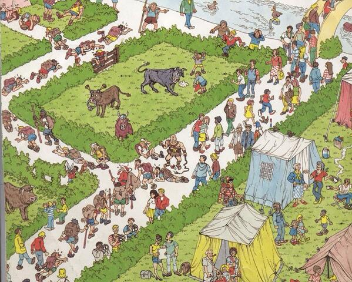
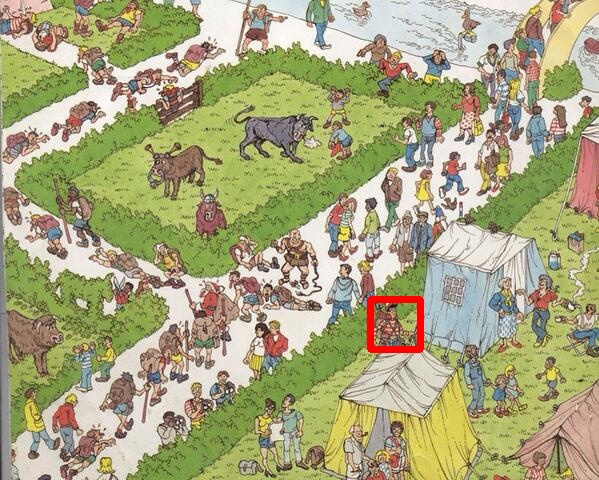

The goal, given a query image of Waldo and the puzzle image, is to find Waldo in in the puzzle image and highlight his location.
Here is the image :

# Import Necessary library
import cv2
import numpy as np
# Load input image and convert to grayscale
image = cv2.imread('image.jpg')
gray = cv2.cvtColor(image, cv2.COLOR_BGR2GRAY)
# Load template image
template = cv2.imread('waldo.jpg', 0)
# Match Template and grayscaled image
result = cv2.matchTemplate(gray, template, cv2.TM_CCOEFF)
# Find min and val of location and value
min_val, max_val, min_loc, max_loc = cv2.minMaxLoc(result)
# Set Dimensions for box
top_left = max_loc
bottom_right = (top_left[0]+50, top_left[1]+50)
# Create Bounding box
cv2.rectangle(image, top_left, bottom_right, (0, 0, 255), 5)
# Saved output image
cv2.imwrite("Findwaldo.jpg", image)
Output Image will be:
Compares a template against overlapped image regions.
The function slides through image , compares the overlapped patches of size w x h against templ using the specified method and stores the comparison results in result .
The summation is done over template and/or the image patch: x' = 0...w-1, y' = 0...h-1
After the function finishes the comparison, the best matches can be found as global minimums (when CV_TM_SQDIFF was used) or maximums (when CV_TM_CCORR or CV_TM_CCOEFF was used) using the minMaxLoc() function. In case of a color image, template summation in the numerator and each sum in the denominator is done over all of the channels and separate mean values are used for each channel. That is, the function can take a color template and a color image. The result will still be a single-channel image, which is easier to analyze.